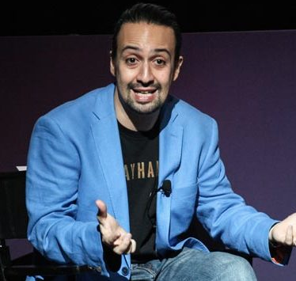
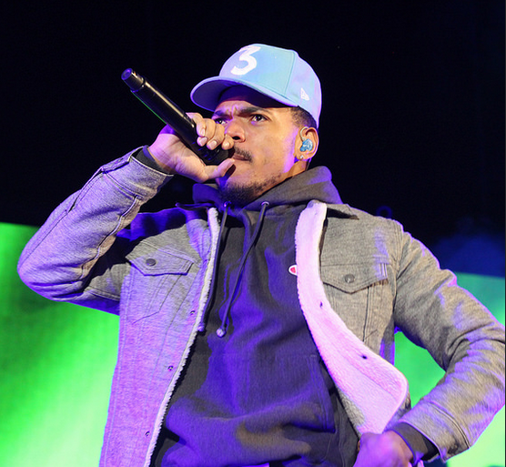
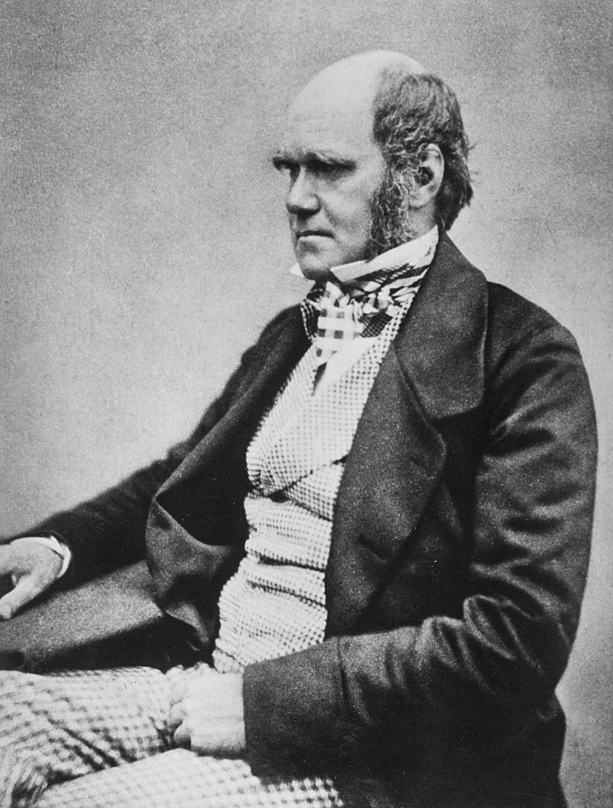

Lin-Manuel Miranda

Miranda was born in New York City[1] and raised in the neighborhood of Inwood, the son of Luz Towns, a clinical psychologist, and Luis A. Miranda, Jr., a Democratic Party consultant who advised New York City mayor Ed Koch.[4][5][6] Miranda has one older sister, Luz, who is the Chief Financial Officer of the MirRam Group.[7] During childhood and his teens, he spent at least one month each year with his grandparents in Vega Alta, Puerto Rico.[8][9] He is of mostly Puerto Rican descent. His mother's ancestors include an interracial couple, Sophie, who was black, and David Towns, who was white; from the early 1800s, this couple spent their married life trying to outrun slavery as laws and governments changed around them. Ensuing branches of the Towns family primarily married Mexican spouses in Texas and Mexico, and Miranda, for his part, has described his ancestry as a quarter Mexican.[6][10][11] The name "Lin-Manuel" was inspired by a poem about the Vietnam War, Nana roja para mi hijo Lin Manuel, by the Puerto Rican writer José Manuel Torres Santiago.
Chance the Rapper

Chancelor Jonathan Bennett was born in Chicago, Illinois to Ken Williams-Bennett, an aide to former Chicago mayor Harold Washington and then-Senator Barack Obama, and Lisa Bennett, a secretary for the office of Illinois Attorney General. Bennett grew up in the middle-class neighborhood of West Chatham on Chicago's South Side.[4] When Bennett was thirteen, his father began to work in the Department of Labor during President Barack Obama's first term. Bennett personally met President Obama in his youth and discussed his aspirations to be a rapper, to which Obama responded with "word". Bennett was originally going to move to Washington, D.C. following Obama's win in the 2008 presidential election though those plans eventually fell through. Bennett attended Jones College Prep High School where he was a member of the Jewish Student Union. During his time in high school, Bennett did not get good grades and was suspended often
Charles Darwin

Charles Robert Darwin was born in Shrewsbury, Shropshire, on 12 February 1809, at his family's home, The Mount.[24] He was the fifth of six children of wealthy society doctor and financier Robert Darwin and Susannah Darwin (née Wedgwood). He was the grandson of two prominent abolitionists: Erasmus Darwin on his father's side, and Josiah Wedgwood on his mother's side.
Three quarter length portrait of seated boy smiling and looking at the viewer. He has straight mid-brown hair, and wears dark clothes with a large frilly white collar. In his lap he holds a pot of flowering plants
Painting of seven-year-old Charles Darwin in 1816.
Both families were largely Unitarian, though the Wedgwoods were adopting Anglicanism. Robert Darwin, himself quietly a freethinker, had baby Charles baptised in November 1809 in the Anglican St Chad's Church, Shrewsbury, but Charles and his siblings attended the Unitarian chapel with their mother. The eight-year-old Charles already had a taste for natural history and collecting when he joined the day school run by its preacher in 1817. That July, his mother died. From September 1818, he joined his older brother Erasmus attending the nearby Anglican Shrewsbury School as a boarder.